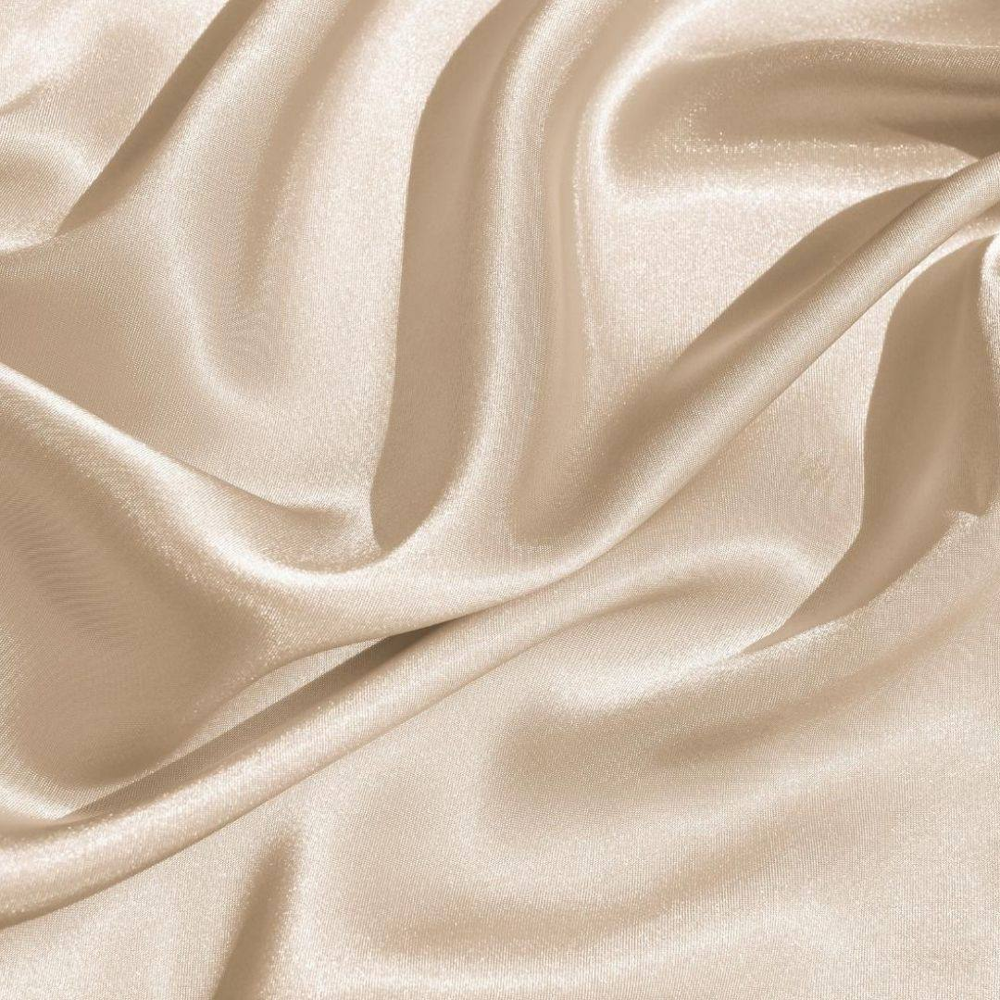
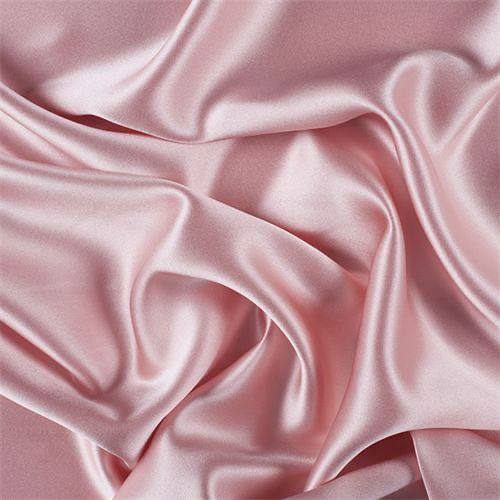
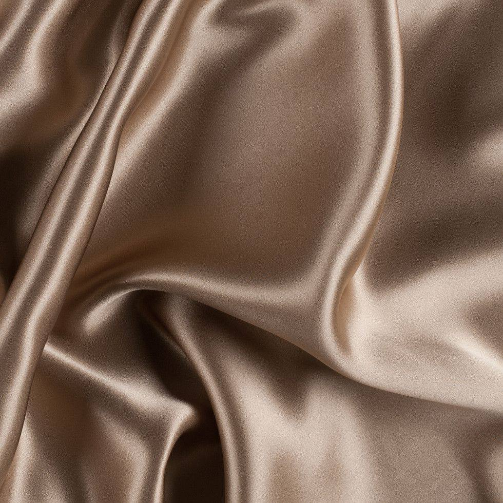
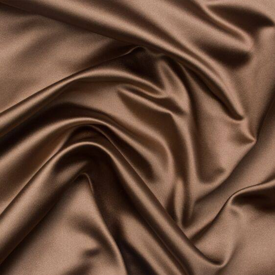
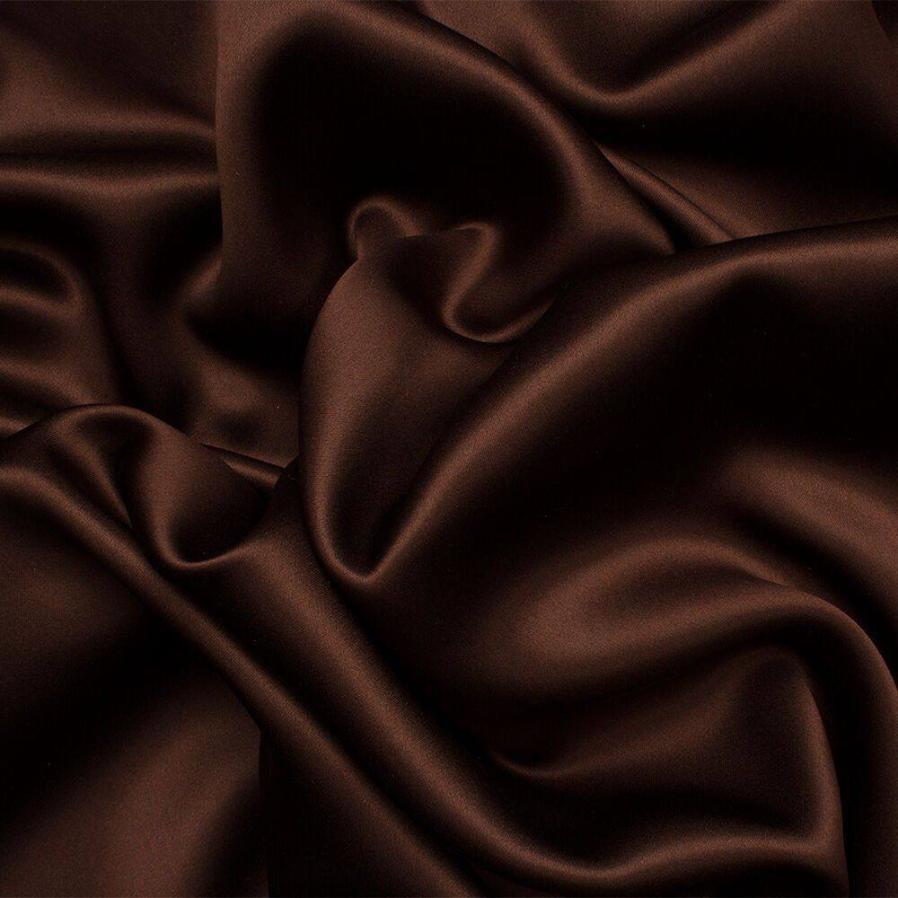
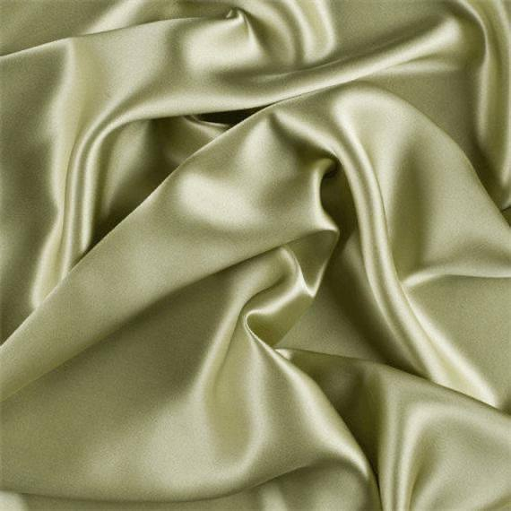
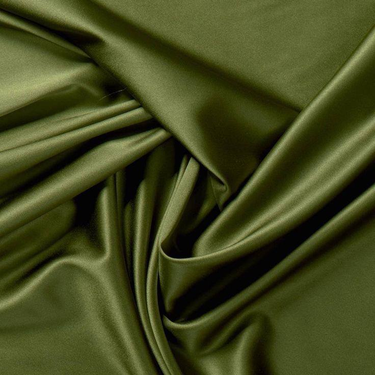
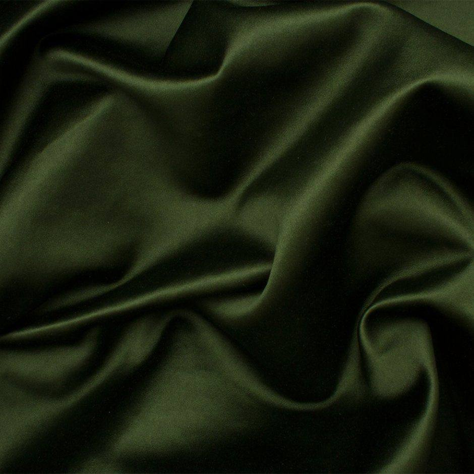

Для маршруту Коломия – Чеське Будєйовіце можемо з власного досвіду порекомендувати два автобуси:
1. Перевізник Royal Express
Прямий автобус Чернівці – Чеське Будєйовіце (із зупинкою в Коломиї).
Курсує регулярно в обидва напрямки.
📞 Контакти: 0 (96) 471 00 20
2. Перевізник Nikolo (надійніший та швидший)
Маршрут Коломия – Плзень (виходити в Празі)
З Праги до Чеських Будєйовіц потрібно буде добиратися додатково автобусом або поїздом.
📞 Диспетчер: +380 (98) 558 66 29
🚏 Обидва автобуси їдуть через Львів, де гості зі Львова та Луцька також можуть підсісти ♥️
🎟 Рекомендуємо не бронювати квитки безпосередньо у перевізника, а купувати їх у касах на автостанціях — так зазвичай простіше та надійніше.
💬 З добиранням з інших напрямків, на жаль, досвіду ми не маємо. Якщо виникнуть труднощі з квитками на ваш маршрут — дайте нам знати, спробуємо щось придумати разом 😊
Ми розуміємо, що для більшості наших гостей спланувати приїзд може бути непросто. Однак для організації святкування нам важливо заздалегідь знати кількість гостей. Ми будемо дуже вдячні за підтвердження Вашої присутності на нашому святі до 20.05.2026.
Будемо раді, якщо Ви зможете підібрати вбрання на наше свято в наступних кольорах:
Champagne

Beige

Rose Smoke

Latte

Chocolate milk

Espresso

Pastel Olive

Verdun Green

Bottle Deep
🎨 Просимо уникати яскравих кольорів (напр. червоного) та повністю білого образу. Надавайте, будь ласка, перевагу пастельним відтінкам. Білий та чорний можуть використовуватися для акценту (взуття, аксесуари, чоловічі сорочки).
Оскільки ми живемо разом уже довший час, то встигли облаштувати нашу затишну домівку. Саме тому, найбільшим подарунком для нас стане Ваш вклад у здійснення нашої спільної мрії — власного житла, де народжуватиметься ще більше наших щасливих спогадів.
Тут Ви згодом зможете поділитися Вашими спогадами з нашого весілля. Також, після свята тут зʼявиться галерея з фото від нашого фотографа та відео від відеографа.
👰🏻♀️Наталія:
+380 (68) 182 82 07 (комунікація лише через Viber або WhatsApp)
+420 777 112 974 (дзвінки та Telegram)
🤵🏻Павло:
+420 774 888 728 (дзвінки, WhatsApp, Telegram)